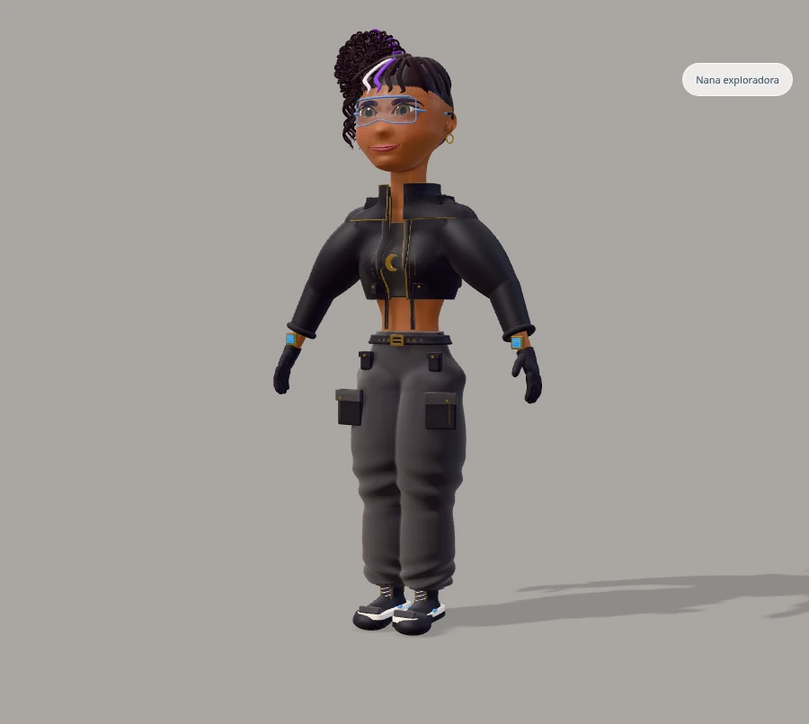
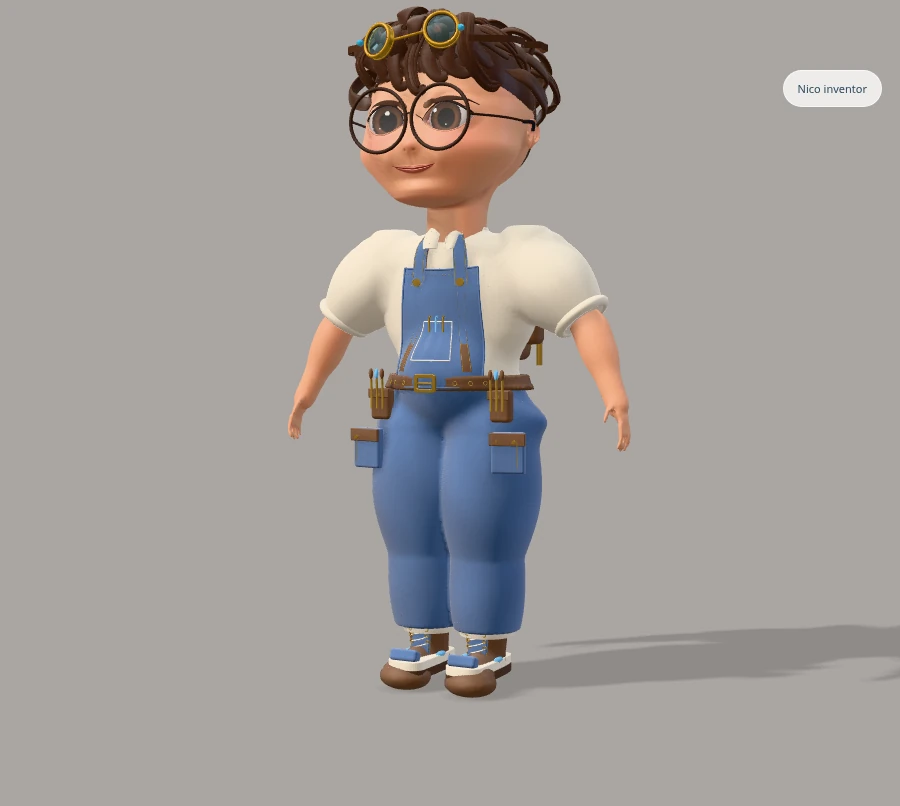
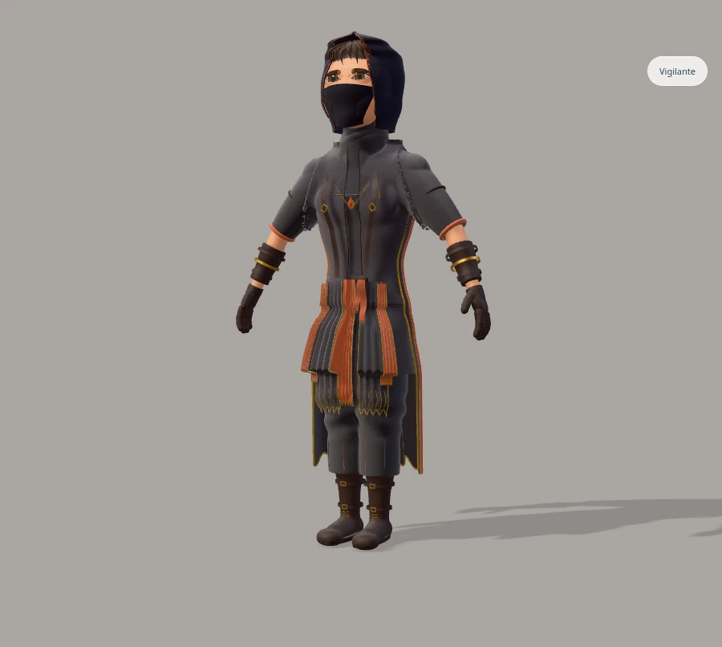
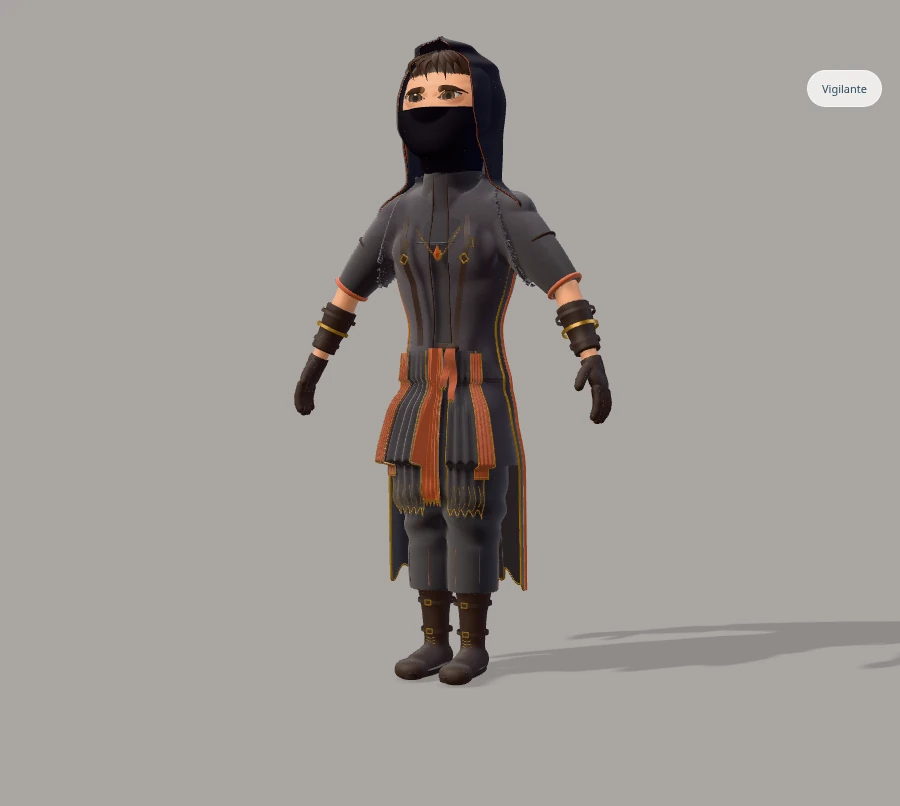
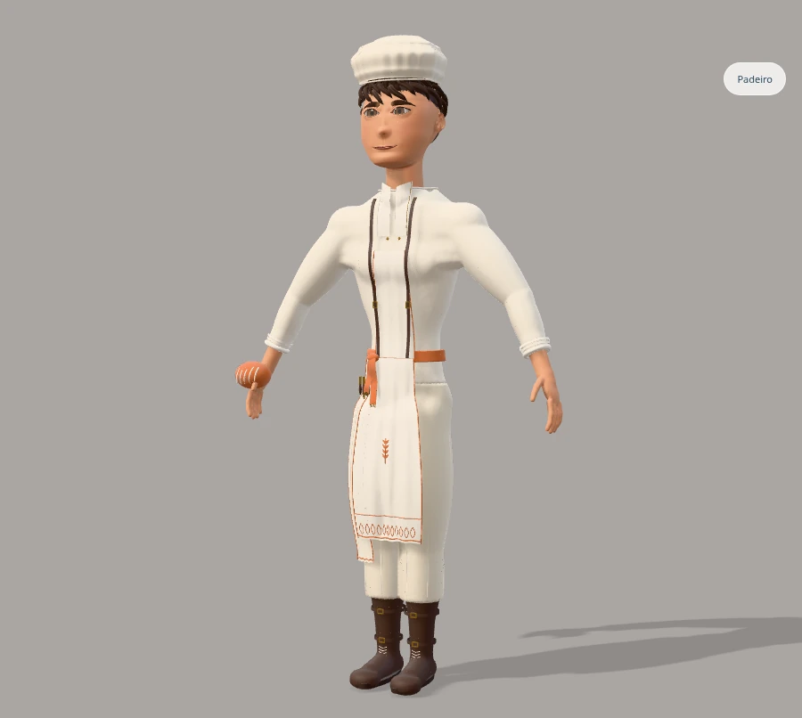
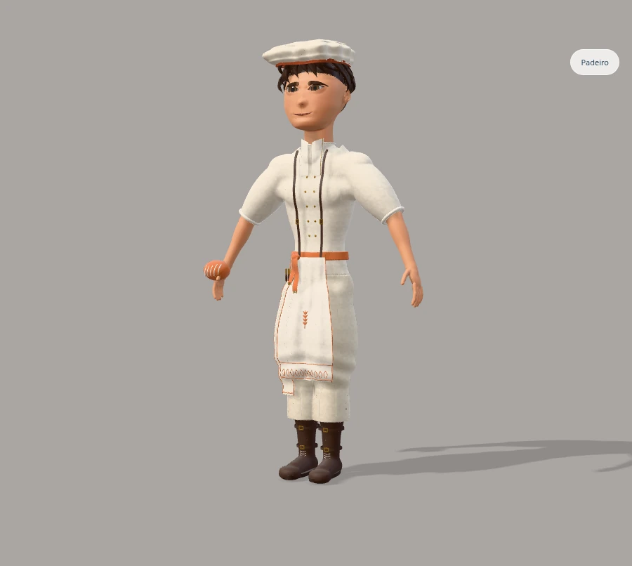

Abrir o ateliêNana, Nico e Vigilante — personagem completo
Comparação com a versão reprovada c4673ef. Rosto, cabelo, proporções e figurino são malhas reais do ateliê. As duas versões usam a mesma câmera e iluminação. Esta revisão ainda depende de avaliação visual; os testes técnicos não comprovam semelhança com as referências.
Nana exploradora

Antes · c4673ef reprovado Revisão atual
Revisão atualNico inventor

Antes · c4673ef reprovado Revisão atual
Revisão atualVigilante

Antes · c4673ef reprovado
Revisão atualPadeiro · mesma identidade

Antes · c4673ef reprovado
Revisão atual